After studying this section you should be able to do the following:
Google has been called a one-trick pony,C. Li, “Why Google’s One-Trick Pony Struggles to Learn New Tricks,” Harvard Business Publishing, May 2009. but as tricks go, it’s got an exquisite one. Google’s “trick” is matchmaking—pairing Internet surfers with advertisers and taking a cut along the way. This cut is substantial—over twenty-one billion dollars in 2008. In fact, as Wired’s Steve Levy puts it, Google’s matchmaking capabilities may represent “the most successful business idea in history.”S. Levy, “The Secrets of Googlenomics,” Wired, June 2009. For perspective, consider that as a ten-year-old firm, and one that had been public for less than five years, Google had already grown to earn more annual advertising dollars than any U.S. media company. No television network, no magazine group, no newspaper chain brings in more ad bucks than Google. And none is more profitable. While Google’s stated mission is “to organize the world’s information and make it universally accessible and useful,” advertising drives profits and lets the firm offer most of its services for free.
Figure 8.1 U.S. Advertising Spending (by selected media)
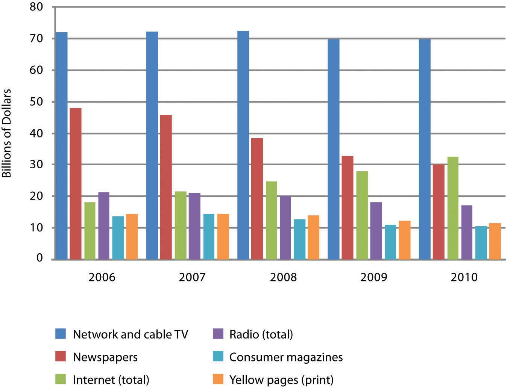Online advertising represents the only advertising category trending with positive growth. Figures for 2009 and beyond are estimates.
Source: Data retrieved via eMarketer.com.
Figure 8.2 U.S. Online Ad Spending (by format)
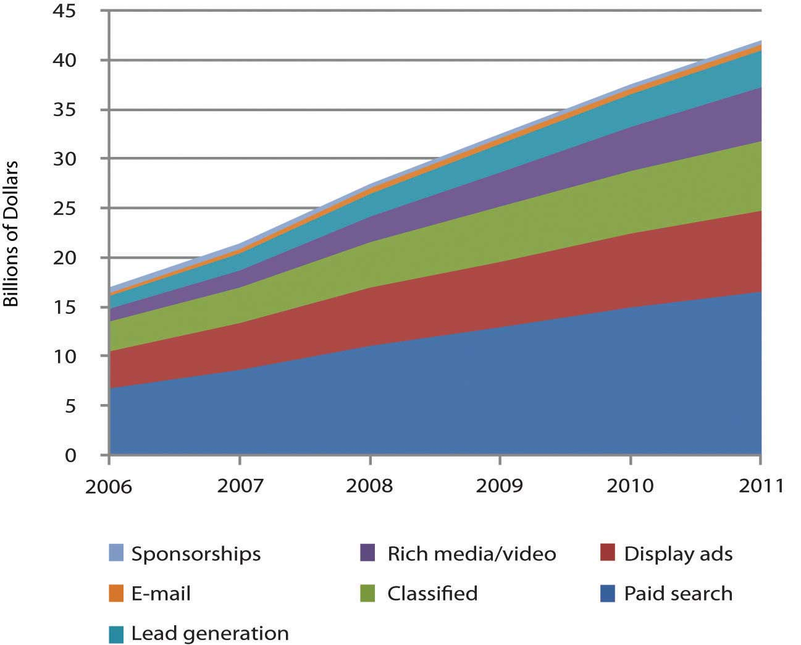Search captures the most online ad dollars, and Google dominates search advertising. Figures for 2009 and beyond are estimates.
Source: Data retrieved via eMarketer.com.
As more people spend more time online, advertisers are shifting spending away from old channels to the Internet; and Google is swallowing the lion’s share of this funds transfer.J. Pontin, “But Who’s Counting?” Technology Review, March/April 2009. By some estimates Google has 76 percent of the search advertising business.C. Sherman, “Report: Google Leads U.S. Search Advertising Market With 76% Market Share,” Search Engine Land, January 20, 2009. Add to that Google’s lucrative AdSense network that serves ads to sites ranging from small time bloggers to the New York Times, plus markets served by Google’s acquisition of display ad leader DoubleClick, and the firm controls in the neighborhood of 70 percent of all online advertising dollars.L. Baker, “Google Now Controls 69% of Online Advertising Market,” Search Engine Journal, March 31, 2008. Google has the world’s strongest brandL. Rao, “Guess Which Brand Is Now Worth $100 Billion?” TechCrunch, April 30, 2009. (its name is a verb—just Google it). It is regularly voted among the best firms to work for in America (twice topping Fortune’s list). While rivals continue to innovate (see the box “Search: Google Rules, but It Ain’t Over” in Section 8.10 "The Battle Unfolds") through Q1 2009, Google’s share of the search market has consistently grown while its next two biggest competitors have shrunk.
Figure 8.3 Search Market Share, Year-End 2008Adapted from S. Shankland, “Google Conquers 2008 Search Market in U.S.,” CNET, January 14, 2009.
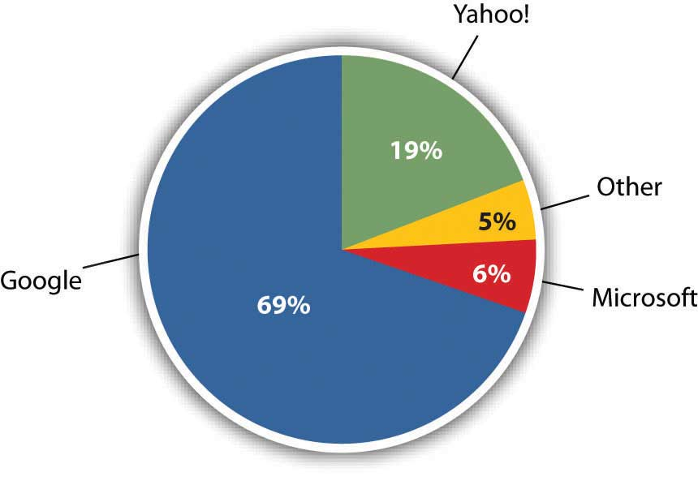Figure 8.4 Change in Market Share, 2007–2008Adapted from S. Shankland, “Google Conquers 2008 Search Market in U.S.,” CNET, January 14, 2009.
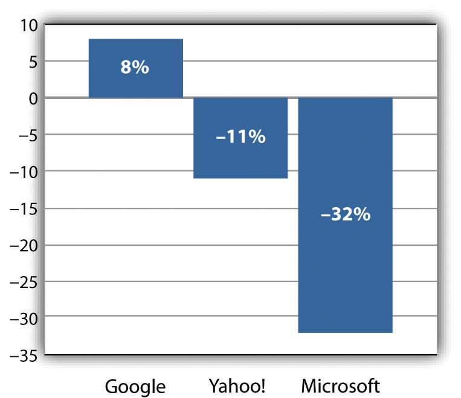Wall Street has rewarded this success. The firm’s market capitalization (market cap)The value of a firm calculated by multiplying its share price by the number of shares., the value of the firm calculated by multiplying its share price by the number of shares, makes Google the most valuable media company on the planet. By early 2009, Google’s market cap was greater than that of News Corp (which includes Fox, MySpace, and the Wall Street Journal), Disney (including ABC, ESPN, theme parks, and Pixar), Time Warner (Fortune, Time, Sports Illustrated, CNN, and Warner Bros.), Viacom (MTV, VH1, and Nickelodeon), CBS, and the New York Times—combined! Not bad for a business started by two twenty-something computer science graduate students. By 2007 that duo, Sergey Brin and Larry Page, were billionaires, tying for fifth on the Forbes 400 list of wealthiest Americans.
Brin and Page have built a talent magnet. At the Googleplex, the firm’s Mountain View, California headquarters, geeks are lavished with perks that include on-site laundry, massage, carwash, bicycle repair, free haircuts, state of the art gyms, and wi-fiWireless technologies linking base stations (or hotspots) with devices containing wi-fi chips. Most hotspots have a range of 100 to 300 feet. equipped shuttles that ferry employees between Silicon Valley and the San Francisco Bay area. The Googleplex is also pretty green. The facility gets 30 percent of its energy from solar cells, representing the largest corporate installation of its kind.D. Weldon, “Google’s Power Play,” EnergyDigital, August 30, 2007.
The firm’s quirky tech-centric culture is evident everywhere. A T-Rex skeleton looms near the volleyball court. Hanging from the lobby ceiling is a replica of SpaceShipOne, the first commercial space vehicle. And visitors to the bathroom will find “testing on the toilet,” coding problems or other brainteasers to keep gray matter humming while seated on one of the firm’s $800 remote-controlled Japanese commodes. Staff also enjoy an A-list lecture series attracting luminaries ranging from celebrities to heads of state.
And of course there’s the food—all of it free. The firm’s founders felt that no employee should be more than 100 feet away from nourishment, and a tour around Google offices will find espresso bars, snack nooks, and fully stocked beverage refrigerators galore. There are eleven gourmet cafeterias on site, the most famous being “Charlie’s Place,” first run by the former executive chef for the Grateful Dead.
CEO Eric Schmidt says the goal of all this is “to strip away everything that gets in our employees’ way.”L. Wolgemuth, “Forget the Recession, I Want a Better Chair,” U.S. News and World Report, April 28, 2008. And the perks, culture, and sense of mission have allowed the firm to assemble one of the most impressive rosters of technical talent anywhere. The Googleplex is like a well-fed Manhattan project, and employee ranks have included “Father of the Internet” Vint Cerf; Hal Varian, the former Dean of the U.C. Berkeley School of Information Management and Systems; Kai-Fu Lee, the former head of Microsoft Research in China; and Andy Hertzfeld, one of the developers of the original Macintosh user interface.
Engineers find Google a particularly attractive place to work, in part due to a corporate policy of offering “20 percent time,” the ability work the equivalent of one day a week on new projects that interest them. It’s a policy that has fueled innovation. Google Vice President Marissa Mayer (who herself regularly ranks among Fortune’s most powerful women in business) has stated that roughly half of Google products got their start in 20 percent time.B. Casnocha, “Success on the Side,” The American: The Journal of the American Enterprise Institute, April 24, 2009.
Studying Google gives us an idea of how quickly technology-fueled market disruptions can happen, and how deeply these disruptions penetrate various industries. We’ll also study the underlying technologies that power search, online advertising, and customer profiling. We’ll explore issues of strategy, privacy, fraud, and discuss other opportunities and challenges the firm faces going forward.
After studying this section you should be able to do the following:
Before diving into how the firm makes money, let’s first understand how Google’s core service, search, works.
Perform a search (or querySearch.) on Google or another search engine, and the results you’ll see are referred to by industry professionals as organic or natural searchSearch engine results returned and ranked according to relevance.. Search engines use different algorithms for determining the order of organic search results, but at Google the method is called PageRankAlgorithm developed by Google cofounder Larry Page to rank Web sites. (a bit of a play on words, it ranks Web pages, and was initially developed by Google cofounder Larry Page). Google does not accept money for placement of links in organic search results. Instead, PageRank results are a kind of popularity contest. Web pages that have more pages linking to them are ranked higher.
Figure 8.5
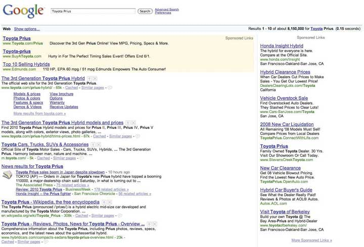The query for “Toyota Prius” triggers organic search results, flanked top and right by sponsored link advertisements.
The process of improving a page’s organic search results is often referred to as search engine optimization (SEO)The process of improving a page’s organic search results.. SEO has become a critical function for many marketing organizations since if a firm’s pages aren’t near the top of search results, customers may never discover its site.
Google is a bit vague about the specifics of precisely how PageRank has been refined, in part because many have tried to game the system. The less scrupulous have tried creating a series of bogus Web sites, all linking back to the pages they’re trying to promote (this is called link fraudAlso called “spamdexing” or “link farming.” The process of creating a series of bogus Web sites, all linking back to the pages one is trying to promote., and Google actively works to uncover and shut down such efforts). We do know that links from some Web sites carry more weight than others. For example, links from Web sites that Google deems as “influential,” and links from most “.edu” Web sites, have greater weight in PageRank calculations than links from run-of-the-mill “.com” sites.
When performing a search via Google or another search engine, you’re not actually searching the Web. What really happens is that the major search engines make what amounts to a copy of the Web, storing and indexing the text of online documents on their own computers. Google’s index considers over one trillion URLs.A. Wright, “Exploring a ‘Deep Web’ That Google Can’t Grasp,” New York Times, February 23, 2009. The upper right-hand corner of a Google query shows you just how fast a search can take place (in the example above, rankings from over eight million results containing the term “Toyota Prius” were delivered in less than two tenths of a second).
To create these massive indexes, search firms use software to crawl the Web and uncover as much information as they can find. This software is referred to by several different names: software robots, spiders, Web crawlersSoftware that traverses available Web links in an attempt to perform a given task. Search engines use spiders to discover documents for indexing and retrieval.. They all pretty much work the same way. In order to make its Web sites visible, every online firm provides a list of all of the public, named servers on its network, known as Domain Name Service (DNS)Internet directory service that allows devices and services to be named and discoverable. The DNS, for example, helps your browser locate the appropriate computers when entering an address like http://finance.google.com. listings. For example, Yahoo! has different servers that can be found at http://www.yahoo.com, sports.yahoo.com, weather.yahoo.com, finance.yahoo.com, et cetera. Spiders start at the first page on every public server and follow every available link, traversing a Web site until all pages are uncovered.
Google will crawl frequently updated sites, like those run by news organizations, as often as several times an hour. Rarely updated, less popular sites might only be reindexed every few days. The method used to crawl the Web also means that if a Web site isn’t the first page on a public server, or isn’t linked to from another public page, then it’ll never be found.Most Web sites do have a link where you can submit a Web site for indexing, and doing so can help promote the discovery of your content. Also note that each search engine also offers a page where you can submit your Web site for indexing.
While search engines show you what they’ve found on their copy of the Web’s contents; clicking a search result will direct you to the actual Web site, not the copy. But sometimes you’ll click a result only to find that the Web site doesn’t match what the search engine found. This happens if a Web site was updated before your search engine had a chance to reindex the changes. In most cases you can still pull up the search engine’s copy of the page. Just click the “Cached” link below the result (the term cacheA temporary storage space used to speed computing tasks. refers to a temporary storage space used to speed computing tasks).
But what if you want the content on your Web site to remain off limits to search engine indexing and caching? Organizations have created a set of standards to stop the spider crawl, and all commercial search engines have agreed to respect these standards. One way is to put a line of HTML code invisibly embedded in a Web site that tells all software robots to stop indexing a page, stop following links on the page, or stop offering old page archives in a cache. Users don’t see this code, but commercial Web crawlers do. For those familiar with HTML code (the language used to describe a Web site), the command to stop Web crawlers from indexing a page, following links, and listing archives of cached pages looks like this:
<META NAME=“ROBOTS” CONTENT=“NOINDEX, NOFOLLOW, NOARCHIVE”>
There are other techniques to keep the spiders out, too. Web site administrators can add a special file (called robots.txt) that provides similar instructions on how indexing software should treat the Web site. And a lot of content lies inside the “dark Web,” either behind corporate firewalls or inaccessible to those without a user account—think of private Facebook updates no one can see unless they’re your friend—all of that is out of Google’s reach.
Sergey Brin and Larry Page started Google with just four scavenged computers.M. Liedtke, “Google Reigns as World’s Most Powerful 10-Year-Old,” Associated Press, September 5, 2008. But in a decade, the infrastructure used to power the search sovereign has ballooned to the point where it is now the largest of its kind in the world.David F. Carr, “How Google Works,” Baseline, July 6, 2006. Google doesn’t disclose the number of servers it uses, but by some estimates, it runs over 1.4 million servers in over a dozen so-called server farmsA massive network of computer servers running software to coordinate their collective use. Server farms provide the infrastructure backbone to SaaS and hardware cloud efforts, as well as many large-scale Internet services. worldwide.R. Katz, “Tech Titans Building Boom,” IEEE Spectrum 46, no. 2 (February 1, 2009). In 2008, the firm spent $2.18 billion on capital expenditures, with data centers, servers, and networking equipment eating up the bulk of this cost.Google, “Google Announces Fourth Quarter and Fiscal Year 2008 Results,” press release, January 22, 2009. Building massive server farms to index the ever-growing Web is now the cost of admission for any firm wanting to compete in the search market. This is clearly no longer a game for two graduate students working out of a garage.
Video Clip
Google’s Container Data Center
Take a virtual tour of one of Google’s data centers.
The size of this investment not only creates a barrier to entry, it influences industry profitability, with market-leader Google enjoying huge economies of scale. Firms may spend the same amount to build server farms, but if Google has two-thirds of this market (and growing) while Microsoft’s search draws only about one-tenth the traffic, which do you think enjoys the better return on investment?
The hardware components that power Google aren’t particularly special. In most cases the firm uses the kind of Intel or AMD processors, low-end hard drives, and RAM chips that you’d find in a desktop PC. These components are housed in rack-mounted servers about 3.5 inches thick, with each server containing two processors, eight memory slots, and two hard drives.
In some cases, Google mounts racks of these servers inside standard-sized shipping containers, each with as many as 1,160 servers per box.S. Shankland, “Google Unlocks Once-Secret Server,” CNET, April 1, 2009. A given data center may have dozens of these server-filled containers all linked together. Redundancy is the name of the game. Google assumes individual components will regularly fail, but no single failure should interrupt the firm’s operations (making the setup what geeks call fault-tolerantSystems that are capable of continuing operation even if a component fails.). If something breaks, a technician can easily swap it out with a replacement.
Each server farm layout has also been carefully designed with an emphasis on lowering power consumption and cooling requirements. And the firm’s custom software (much of it built upon open-source products) allows all this equipment to operate as the world’s largest grid computer.
Web search is a task particularly well suited for the massively parallel architecture used by Google and its rivals. For an analogy of how this works, imagine that working alone, you need try to find a particular phrase in a hundred-page document (that’s a one server effort). Next, imagine that you can distribute the task across five thousand people, giving each of them a separate sentence to scan (that’s the multi-server grid). This difference gives you a sense of how search firms use massive numbers of servers and the divide-and-conquer approach of grid computing to quickly find the needles you’re searching for within the Web’s haystack (for more on grid computing, see Chapter 4 "Moore’s Law and More: Fast, Cheap Computing and What It Means for the Manager", and for more on server farms, see Chapter 10 "Software in Flux: Partly Cloudy and Sometimes Free").
Figure 8.6
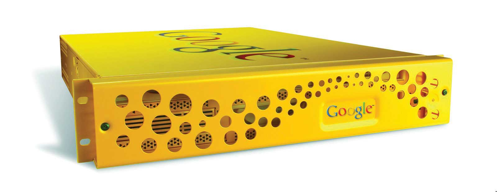The Google Search Appliance is a hardware product that firms can purchase in order to run Google search technology within the privacy and security of an organization’s firewall.
Google will even sell you a bit of its technology so that you can run your own little Google in-house without sharing documents with the rest of the world. Google’s line of search appliances are rack-mounted servers that can index documents within a corporation’s Web site, even specifying password and security access on a per-document basis. Selling hardware isn’t a large business for Google, and other vendors offer similar solutions, but search appliances can be vital tools for law firms, investment banks, and other document-rich organizations.
Google not only gives you search results, it lets you see aggregate trends in what its users are searching for, and this can yield powerful insights. For example, by tracking search trends for flu symptoms, Google’s Flu Trends Web site can pinpoint outbreaks one to two weeks faster than the Centers for Disease Control and Prevention.S. Bruce, “Google Says User Data Aids Flu Detection,” eHealthInsider, May 25, 2009. Want to go beyond the flu? Google’s Trends, and Insights for Search services allow anyone to explore search trends, breaking out the analysis by region, category (image, news, product), date, and other criteria. Savvy managers can leverage these and similar tools for competitive analysis, comparing a firm, its brands, and its rivals.
Figure 8.7
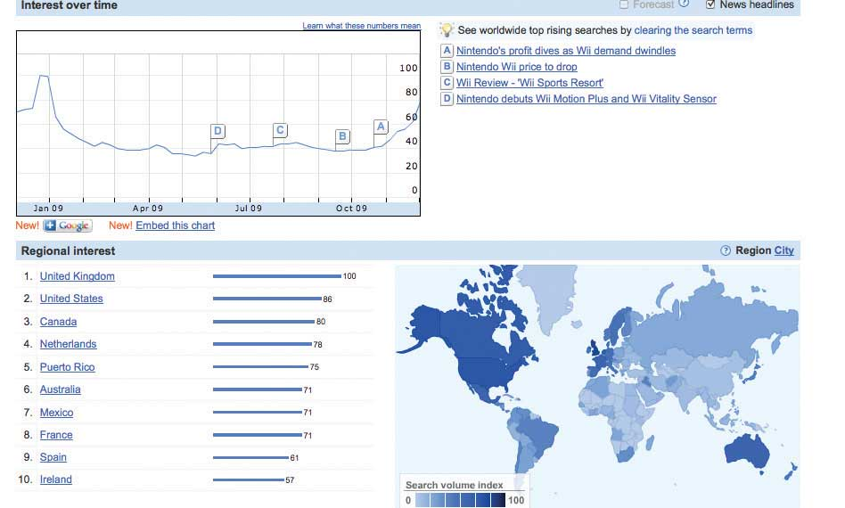Google Insights for Search can be a useful tool for competitive analysis and trend discovery. The chart shows a comparison (over a twelve-month period, and geographically) of search interest in the terms Wii, Playstation, and Xbox.
After studying this section you should be able to do the following:
For several years, Internet advertising has been the only major media ad category to show significant growth. There are three factors driving online ad growth trends: (1) increased user time online, (2) improved measurement and accountability, and (3) targeting.
American teenagers (as well as the average British, Australian, and New Zealander Web surfer) now spend more time on the Internet than watching television.“American Teenagers Spend More Time Online Than Watching Television,” MediaWeek, June 19, 2008; A. Hendry, “Connected Aussies Spend More Time Online Than Watching TV,” Computerworld Australia, May 21, 2008; and “Brits Spend More Time Online Than Watching TV,” BigMouthMedia, July 12, 2007. They’re reading fewer print publications, and radio listening among the iPod generation is down 30 percent.M. Tobias, “Newspapers under Siege,” Philstar, May 18, 2009. So advertisers are simply following the market. Online channels also provide advertisers with a way to reach consumers at work—something that was previously much more difficult to do.
Many advertisers have also been frustrated by how difficult it’s been to gauge the effectiveness of traditional ad channels such as TV, print, and radio. This frustration is reflected in the old industry saying, “I know that half of my advertising is working—I just don’t know which half.” Well, with the Internet, now you know. While measurement technologies aren’t perfect, advertisers can now count ad impressionsEach time an ad is served to a user for viewing. (each time an ad appears on a Web site), whether or not a user clicks on an ad, and the product purchases or other Web site activity that comes from those clicks.For a more detailed overview of the limitations in online ad measurement, see L. Rao, “Guess Which Brand Is Now Worth $100 Billion?” TechCrunch, April 30, 2009. And as we’ll see, many online ad payment schemes are directly linked to ad performance.
Various technologies and techniques also make it easier for firms to target users based on how likely a person is to respond to an ad. In theory a firm can use targeting to spend marketing dollars only on those users deemed to be its best prospects. Let’s look at a few of these approaches in action.
After studying this section you should be able to do the following:
The practice of running and optimizing search engine ad campaigns is referred to as search engine marketing (SEM)The practice of designing, running and optimizing search-engine ad campaigns..S. Elliott, “More Agencies Investing in Marketing with a Click,” New York Times, March 14, 2006. SEM is a hot topic in an increasingly influential field, so it’s worth spending some time learning how search advertising works on the Internet’s largest search engine.
Roughly two-thirds of Google’s revenues come from ads served on its own sites, and the vast majority of this revenue comes from search engine ads.Google, “Google Announces Fourth Quarter and Fiscal Year 2008 Results,” press release, January 22, 2009. During Google’s early years, the firm actually resisted making money through ads. In fact, while at Stanford, Brin and Page even coauthored a paper titled “The Evils of Advertising.”D. Vise, “Google’s Decade,” Technology Review, September 12, 2008. But when Yahoo! and others balked at buying Google’s search technology (offered for as little as $500,000), Google needed to explore additional revenue streams. It wasn’t until two years after incorporation that Google ran ads alongside organic search results. That first ad, one for “Live Mail Order Lobsters,” appeared just minutes after the firm posted a link reading “See Your Ad Here”).S. Levy, “The Secrets of Googlenomics,” Wired, June 2009.
Google has only recently begun incorporating video and image ads into search. For the most part, the ads you’ll see to the right (and sometimes top) of Google’s organic search results appear as keyword advertisingAdvertisements that are targeted based on a user’s query., meaning they’re targeted based on a user’s query. Advertisers bid on the keywords and phrases that they’d like to use to trigger the display of their ad. Linking ads to search was a brilliant move, since the user’s search term indicates an overt interest in a given topic. Want to sell hotel stays in Tahiti? Link your ads to the search term “Tahiti Vacation.”
Not only are search ads highly targeted, advertisers only pay for results. Text ads appearing on Google search pages are billed on a pay-per-click (PPC)A concept where advertisers don’t pay unless someone clicks on their ad. basis, meaning that advertisers don’t spend a penny unless someone actually clicks on their ad. Note that the term pay-per-click is sometimes used interchangeably with the term cost-per-click (CPC)The maximum amount of money an advertiser is willing to pay for each click on their ad..
Google didn’t invent pay-for-performance search advertising. A firm named GoTo.com (later renamed Overture) pioneered pay-per-click ads and bidding systems and held several key patents governing the technology. Overture provided pay-per-click ad services to both Yahoo! and Microsoft, but it failed to refine and match the killer combination of ad auctions and search technology that made Google a star. Yahoo! eventually bought Overture and sued Google for patent infringement. In 2004, the two firms settled, with Google giving Yahoo! 2.7 million shares in exchange for a “fully paid, perpetual license” to over sixty Overture patents.S. Olsen, “Google, Yahoo Bury the Legal Hatchet,” CNET, August 9, 2004.
If an advertiser wants to display an ad on Google search, they can set up a Google AdWords advertising account in minutes, specifying just a single ad, or multiple ad campaigns that trigger different ads for different keywords. Advertisers also specify what they’re willing to pay each time an ad is clicked, how much their overall ad budget is, and they can control additional parameters, such as the timing and duration of an ad campaign.
If no one clicks on an ad, Google doesn’t make money, advertisers don’t attract customers, and searchers aren’t seeing ads they’re interested in. So in order to create a winning scenario for everyone, Google has developed a precise ad ranking formula that rewards top performing ads by considering two metrics: the maximum CPC that an advertiser is willing to pay, and the advertisement’s quality scoreA broad measure of ad performance.—a broad measure of ad performance. Create high quality ads and your advertisements might appear ahead of competition, even if your competitors bid more than you. But if ads perform poorly they’ll fall in rankings or even drop from display consideration.
Below is the formula used by Google to determine the rank order of sponsored links appearing on search results pages.
Ad Rank = Maximum CPC × Quality ScoreOne factor that goes into determining an ad’s quality score is the click-through rate (CTR)The number of users who clicked an ad divided by the number of times the ad was delivered (the impressions). The CTR measures the percentage of people who clicked on an ad to arrive at a destination site. for the ad, the number of users who clicked an ad divided by the number of times the ad was delivered (the impressions). The CTR measures the percentage of people who clicked on an ad to arrive at a destination site. Also included in a quality score are the overall history of click performance for the keywords linked to the ad, the relevance of an ad’s text to the user’s query, and Google’s automated assessment of the user experience on the landing pageThe Web site displayed when a user clicks on an advertisement.—the Web site displayed when a user clicks on the ad. Ads that don’t get many clicks, ad descriptions that have nothing to do with query terms, and ads that direct users to generic pages that load slowly or aren’t strongly related to the keywords and descriptions used in an ad, will all lower an ad’s chance of being displayed.Google, Marketing and Advertising Using Google: Targeting Your Advertising to the Right Audience (Boston: Cengage Learning, 2007).
When an ad is clicked, advertisers don’t actually pay their maximum CPC; Google discounts ads to just one cent more than the minimum necessary to maintain an ad’s position on the page. So if you bid one dollar per click, but the ad ranked below you bids ninety cents, you’ll pay just ninety-one cents if the ad is clicked. Discounting was a brilliant move. No one wants to get caught excessively overbidding rivals, so discounting helps reduce the possibility of this so-called bidder’s remorse. And with this risk minimized, the system actually encouraged higher bids!S. Levy, “The Secrets of Googlenomics,” Wired, June 2009.
Ad ranking and cost-per-click calculations take place as part of an automated auction that occurs every time a user conducts a search. Advertisers get a running total of ad performance statistics so that they can monitor the return on their investment and tweak promotional efforts for better results. And this whole system is automated for self-service—all it takes is a credit card, an ad idea, and you’re ready to go.
Google rakes in billions on what amounts to pocket change earned one click at a time. Most clicks bring in between thirty cents and one dollar. However, costs can vary widely depending on industry, current competition, and perceived customer value. Table 8.1 "10 Most Expensive Industries for Keyword Ads" shows some of the highest reported CPC rates. But remember, any values fluctuate in real time based on auction participants.
Table 8.1 10 Most Expensive Industries for Keyword Ads
| Business/Industry | Keywords in the Top 25 | Avg. CPC |
|---|---|---|
| Structured Settlements | 2 | $51.97 |
| Secured Loans | 2 | $50.67 |
| Buying Endowments | 1 | $50.35 |
| Mesothelioma Lawyers | 5 | $50.30 |
| DUI Lawyers | 4 | $49.78 |
| Conference Call Companies | 1 | $49.64 |
| Car Insurance Quotes | 3 | $49.61 |
| Student Loan Consolidation | 3 | $49.44 |
| Data Recovery | 2 | $49.43 |
| Remortgages | 2 | $49.42 |
Source: X. Becket, “10 Businesses with the Highest Cost Per Click,” WebPageFX Weekly, February 20, 2009.
Since rates are based on auctions, top rates reflect what the market is willing to bear. As an example, law firms, which bring in big bucks from legal fees, decisions, and settlement payments often justify higher customer acquisition costs. And firms that see results will keep spending. Los Angeles–based Chase Law Group has said that it brings in roughly 60 percent of its clients through Internet advertising.C. Mann, “How Click Fraud Could Swallow the Internet,” Wired, January 2006.
GeotargetingIdentifying a user’s physical location (sometimes called geolocation) for the purpose of delivering tailored ads or other content. occurs when computer systems identify a user’s physical location (sometimes called the geolocation) for the purpose of delivering tailored ads or other content. On Google AdWords, for example, advertisers can specify that their ads only appear for Web surfers located in a particular country, state, metropolitan region, or a given distance around a precise locale. They can even draw a custom ad-targeting region on a map and tell Google to only show ads to users detected inside that space.
Ads in Google Search are geotargeted based on IP addressA value used to identify a device that is connected to the Internet. IP addresses are usually expressed as four numbers (from 0 to 255), separated by periods.. Every device connected to the Internet has a unique IP address assigned by the organization connecting the device to the network. Normally you don’t see your IP address (a set of four numbers, from 0 to 255, separated by periods; e.g., 136.167.2.220). But the range of IP addresses “owned” by major organizations and Internet service providers (ISPs) is public knowledge. In many cases it’s possible to make an accurate guess as to where a computer, laptop, or mobile phone is located simply by cross-referencing a device’s current IP address with this public list.
For example, it’s known that all devices connected to the Boston College network contain IP addresses starting with the numbers 136.167. If a search engine detects a query coming from an IP address that begins with those two numbers, it can be fairly certain that the person using that device is in the greater Boston area.
Figure 8.8
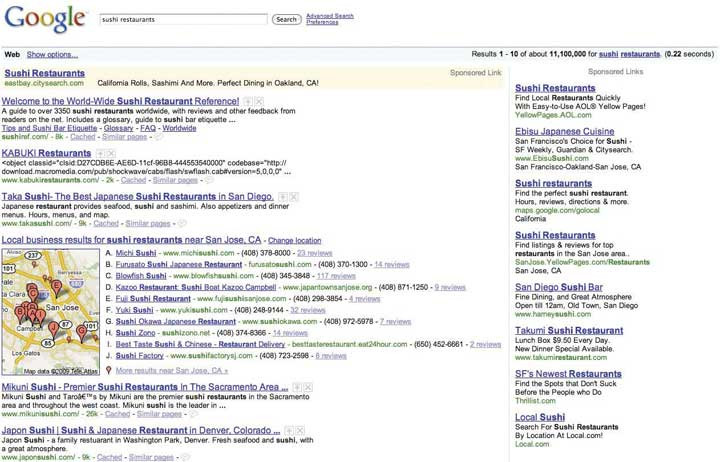Figure 8.9
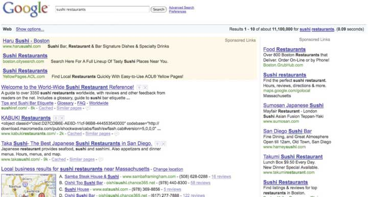In this geotargeting example, the same search term is used at roughly the same time on separate computers located in Silicon Valley area (top) and Boston (bottom). Note how geotargeting impacts results.
IP addresses will change depending on how and where you connect to the Internet. Connect your laptop to a hotel’s wi-fi when visiting a new city, and you’re likely to see ads specific to that location. That’s because your Internet service provider has changed, and the firm serving your ads has detected that you are using an IP address known to be associated with your new location.
Geotargeting via IP address is fairly accurate, but it’s not perfect. For example, some Internet service providers may provide imprecise or inaccurate information on the location of their networks. Others might be so vague that it’s difficult to make a best guess at the geography behind a set of numbers (values assigned by a multinational corporation with many locations, for example). And there are other ways locations are hidden, such as when Internet users connect to proxy serversA third-party computer that passes traffic to and from a specific address without revealing the address of the connected user., third-party computers that pass traffic to and from a specific address without revealing the address of the connected users.
While every operating system has a control panel or command that you can use to find your current IP address, there are also several Web sites that will quickly return this value (and a best guess at your current location). One such site is http://ip-adress.com (note the spelling has only one “d”). Visit this or a similar site with a desktop, laptop, and mobile phone. Do the results differ and are they accurate? Why?
There are several other methods of geotargeting. Firms like Skyhook Wireless can identify a location based on its own map of wi-fi hotspots and nearby cell towers. Many mobile devices come equipped with global positioning system (GPS)A network of satellites and supporting technologies used to identify a device’s physical location. chips (identifying location via the GPS satellite network). And if a user provides location values such as a home address or zip code to a Web site, then that value might be stored and used again to make a future guess at a user’s location.
After studying this section you should be able to do the following:
Google runs ads not just in search, but also across a host of Google-owned sites like Gmail, Google News, and Blogger. It will even tailor ads for its map products and for mobile devices. But about 30 percent of Google’s revenues come from running ads on Web sites that the firm doesn’t even own.Google, “Google Announces Fourth Quarter and Fiscal Year 2008 Results,” press release, January 22, 2009.
Next time you’re surfing online, look around the different Web sites that you visit and see how many sport boxes labeled “Ads by Google.” Those Web sites are participating in Google’s AdSense ad network, which means they’re running ads for Google in exchange for a cut of the take. Participants range from small-time bloggers to some of the world’s most highly trafficked sites. Google lines up the advertisers, provides the targeting technology, serves the ads, and handles advertiser payment collection. To participate, content providers just sign up online, put a bit of Google-supplied HTML code on their pages, and wait for Google to send them cash (Web sites typically get about seventy to eighty cents for every AdSense dollar that Google collects).B. Tedeschi, “Google’s Shadow Payroll Is Not Such a Secret Anymore,” New York Times, January 16, 2006.
Google originally developed AdSense to target ads based on keywords automatically detected inside the content of a Web site. A blog post on your favorite sports team, for example, might be accompanied by ads from ticket sellers or sports memorabilia vendors. AdSense and similar online ad networks provide advertisers with access to the long tail of niche Web sites by offering both increased opportunities for ad exposure as well as more-refined targeting opportunities.
Figure 8.10
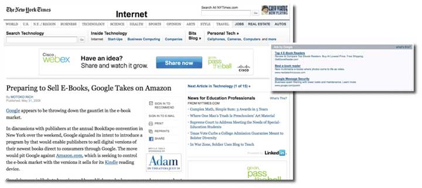The images show advertising embedded around a story on the New York Times Web site. The page runs several ads provided by different ad networks. For example, the WebEx banner ad above the article’s headline was served by AOL-owned Platform-A/Tacoda. The “Ads by Google” box appeared at the end of the article. Note how the Google ads are related to the content of the Times article.
Running ads on your Web site is by no means a guaranteed path to profits. The Internet graveyard is full of firms that thought they’d be able to sustain their businesses on ads alone. But for many Web sites, ad networks can be like oxygen, sustaining them with revenue opportunities they’d never be able to achieve on their own.
For example, AdSense provided early revenue for the popular social news site Digg, as well as the multimillion-dollar TechCrunch media empire. It supports Disaboom, a site run by physician and quadriplegic Dr. Glen House. And it continues to be the primary revenue generator for AskTheBuilder.com. That site’s founder, former builder Tim Carter, had been writing a handyman’s column syndicated to some thirty newspapers. The newspaper columns didn’t bring in enough to pay the bills, but with AdSense he hit pay dirt, pulling in over $350,000 in ad revenue in just his first year!R. Rothenberg, “The Internet Runs on Ad Billions,” BusinessWeek, April 10, 2008.
Figure 8.11
Tim Carter’s Ask the Builder Web site runs ads from Google and other ad networks. Note different ad formats surrounding the content. There’s even an ad in the bottom of the video, served from Google-owned YouTube.
Contextual advertisingAdvertising based on a Web sites content. based on keywords is lucrative, but like all technology solutions it has its limitations. Vendors sometimes suffer from content adjacency problemsA situation where ads appear alongside text the advertiser would like to avoid. when ads appear alongside text they’d prefer to avoid. In one particularly embarrassing example, a New York Post article detailed a gruesome murder where hacked up body parts were stowed in suitcases. The online version of the article included contextual advertising and was accompanied by…luggage ads.A. Overholt, “Search for Tomorrow,” Fast Company, December 19, 2007.
To combat embarrassment, ad networks provide opportunities for both advertisers and content providers to screen out potentially undesirable pairings based on factors like vendor, Web site, keyword, and category. Ad networks also refine ad-placement software based on feedback from prior incidents (for more on content adjacency problems, see Chapter 7 "Facebook: Building a Business from the Social Graph").
Google launched AdSense in 2003, but Google is by no means the only company to run an ad network, nor was it the first to come up with the idea. Rivals include the Yahoo! Publisher Network, Microsoft’s adCenter, and AOL’s Platform-A. Others, like Quigo, don’t even have a consumer Web site yet manage to consolidate enough advertisers to attract high-traffic content providers such as ESPN, Forbes, Fox, and USA Today. Advertisers also aren’t limited to choosing just one ad network. In fact, many content provider Web sites will serve ads from several ad networks (as well as exclusive space sold by their own sales force), oftentimes mixing several different offerings on the same page.
While advertisers can use multiple ad networks, there are several key strategic factors driving the industry. For Google, its ad network is a distribution play. The ability to reach more potential customers across more Web sites attracts more advertisers to Google. And content providers (the Web sites that distribute these ads) want there to be as many advertisers as possible in the ad networks that they join, since this should increase the price of advertising, the number of ads served, and the accuracy of user targeting. If advertisers attract content providers, which in turn attract more advertisers, then we’ve just described network effects! More participants bringing in more revenue also help the firm benefit from scale economies—offering a better return-on-investment from its ad technology and infrastructure. No wonder Google’s been on such a tear—the firm’s loaded with assets for competitive advantage!
While Google has the largest network specializing in distributing text ads, it had been a laggard in graphical display ads (sometimes called image ads). That changed in 2008, with the firm’s $3.1 billion acquisition of display ad network and targeting company DoubleClick. Now in terms of the number of users reached, Google controls both the largest text ad network and the largest display ad network.L. Baker, “Google Now Controls 69% of Online Advertising Market,” Search Engine Journal, March 31, 2008.
After studying this section you should be able to do the following:
Online ads aren’t just about text ads billed in CPC. Ads running through Google AdSense, through its DoubleClick subsidiary, or on most competitor networks can be displayed in several formats and media types, and can be billed in different ways. The specific ad formats supported depend on the ad network but can include the following: image (or display) adsGraphical advertising (as opposed to text ads). (such as horizontally oriented banners, smaller rectangular buttons, and vertically oriented “skyscraper” ads); rich media adsOnline ads that include animation, audio, or video. (which can include animation or video); and interstitialsAds that run before a user arrives at a Web site’s contents. (ads that run before a user arrives at a Web site’s contents). The industry trade group, the Internet Advertising Bureau (IAB)A nonprofit industry trade group for the interactive advertising industry. The IAB evaluates and recommends interactive advertising standards and practices and also conducts research, education, and legislative lobbying. sets common standards for display ads so that a single creativeThe design and content of the advertisement. (the design and content of the advertisement) can run unmodified across multiple ad networks and Web sites.See Interactive Advertising Bureau Ad Unit Guidelines for details at http://www.iab.net/iab_products_and_industry_services/1421/1443/1452.
And there are lots of other ways ads are sold besides cost-per-click. Most graphical display ads are sold according to the number of times the ad appears (the impression). Ad rates are quoted in CPMCost per thousand impressions (the M representing the roman numeral for one thousand)., meaning cost per thousand impressions (the M representing the roman numerical for one thousand). Display ads sold on a CPM basis are often used as part of branding campaigns targeted more at creating awareness than generating click-throughs. Such techniques often work best for promoting products like soft drinks, toothpaste, or movies.
Cost-per-action (CPA)A method of charging for adverting whenever a user performs a specified action such as signing up for a service, requesting material, or making a purchase. ads pay whenever a user performs a specified action such as signing up for a service, requesting material, or making a purchase. Affiliate programsA cost-per-action program, where program sponsors (e.g., Amazon.com, iTunes) pay referring Web sites a percentage of revenue earned from the referral. are a form of cost-per-action, where Web sites share a percentage of revenue earned when a user click-throughs and buys something from their Web site. Amazon runs the world’s largest affiliate program, and referring sites earn can earn 4 percent to 15 percent of sales generated from these click-throughs. Purists might not consider affiliate programs as advertising (rather than text or banner ads, Amazon’s affiliates offer links and product descriptions that point back to Amazon’s Web site), but these programs can be important tools in a firm’s promotional arsenal.
Figure 8.12
Some firms sell sponsorship opportunities. The movie 500 Days of Summer sponsored the printer-friendly formatting of New York Times articles.
Figure 8.13
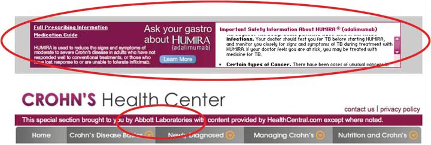Abbott Laboratories sponsored a special section from HealthCentral.com on the Crohn’s Health Center site.
And rather than buying targeted ads, a firm might sometimes opt to become an exclusive advertiser on a site. For example, a firm could buy access to all ads served on a site’s main page; it could secure exclusive access to a region of the page (such as the topmost banner ad); or it may pay to sponsor a particular portion or activity on a Web site (say a parenting forum, or a “click-to-print” button). Such deals can be billed based on a flat rate, CPM, CPC, or any combination of metrics.
As consumers spend more time in video games, it’s only natural that these products become ad channels, too. Finding a sensitive mix that introduces ads without eroding the game experience can be a challenge. Advertising can work in racing or other sports games (in 2008 the Obama campaign famously ran virtual billboards in EA’s Burnout Paradise), but ads make less sense for games set in the past, future, or on other worlds. Branding ads often work best, since click-throughs are typically not something you want disrupting your gaming experience.
Advertisers have also explored sponsorships of Web-based and mobile games. Sponsorships often work best with casual games, such as those offered on Yahoo! Games or EA’s Pogo. Firms have also created online mini games (so-called advergamesWeb-based and mobile games that advertisers develop and offer as a way of building immersive brand engagements.) for longer term, immersive brand engagement (e.g., Mini Cooper’s Slide Parking and Stride Gum’s Chew Challenge). Others have tried a sort of virtual product placement integrated into experiences. A version of The Sims, for example, included virtual replicas of real-world inventory from IKEA and H&M.
Figure 8.14 Obama Campaign’s Virtual Billboard in EA’s Burnout Paradise
Source: Barack Obama U.S. Presidential Campaign Team, 2008.
In-game ad-serving technology also lacks the widely accepted standards of Web-based ads, so it’s unlikely that ads designed for a Wii sports game could translate into a PS3 first-person shooter. Also, one of the largest in-game ad networks, Massive, is owned by Microsoft. That’s good if you want to run ads on XBox, but Microsoft isn’t exactly a firm that Nintendo or Sony want to play nice with.
In-game advertising shows promise, but the medium is considerably more complicated than conventional Web site ads. That complexity lowers relative ROI and will likely continue to constrain growth.
Imagine the two scenarios below. Decide which type of campaign would be best for each: text-based CPC advertising or image ads paid for on a CPM basis). Explain your reasoning.
After studying this section you should be able to do the following:
Advertisers are willing to pay more for ads that have a greater chance of reaching their target audience, and online firms have a number of targeting tools at their disposal. Much of this targeting occurs whenever you visit a Web site, where a behind-the-scenes software dialog takes place between Web browser and Web server that can reveal a number of pieces of information, including IP address, the type of browser used, the computer type, its operating system, and unique identifiers, called cookiesA line of identifying text, assigned and retrieved by a given Web server and stored in your browser..
And remember, any server that serves you content can leverage these profiling technologies. You might be profiled not just by the Web site that you’re visiting (e.g., nytimes.com), but also by any ad networks that serve ads on that site (e.g., Platform-A, DoubleClick, Google AdSense, Microsoft adCenter).
IP addresses are leveraged extensively in customer profiling. An IP address not only helps with geolocation, it can also indicate a browser’s employer or university, which can be further matched with information such as firm size or industry. IBM has used IP targeting to tailor its college recruiting banner ads to specific schools, for example, “There Is Life After Boston College, Click Here to See Why.” That campaign garnered click-through rates ranging from 5 to 30 percentM. Moss, “These Web Sites Know Who You Are,” ZDNet UK, October 13, 1999. compared to average rates that are currently well below 1 percent for untargeted banner ads. DoubleClick once even served a banner that include a personal message for an executive at then-client Modem Media. The ad, reading “Congratulations on the twins, John Nardone,” was served across hundreds of sites, but was only visible from computers on the Modem Media corporate network.M. Moss, “These Web Sites Know Who You Are,” ZDNet UK, October 13, 1999.
The ability to identify a surfer’s computer, browser, or operating system can also be used to target tech ads. For example, Google might pitch its Chrome browser to users detected running Internet Explorer, Firefox, or Safari; while Apple could target those “I’m a Mac” ads just to Windows users.
But perhaps the greatest degree of personalization and targeting comes from cookies. Visit a Web site for the first time, and in most cases, a behind-the-scenes dialog takes place that goes something like this:
Server: Have I seen you before?
Browser: No.
Server: Then take this unique string of numbers and letters (called a cookie). I’ll use it to recognize you from now on.
The cookie is just a line of identifying text assigned and retrieved by a given Web server and stored in your browser. Upon accepting this cookie your browser has been tagged, like an animal. As you surf around the firm’s Web site, that cookie can be used to build a profile associated with your activities. If you’re on a portal like Yahoo! you might type in your zip code, enter stocks that you’d like to track, and identify the sports teams you’d like to see scores for. The next time you return to the Web site, your browser responds to the server’s “Have I see you before?” question with the equivalent of “Yes, you know me,” and it presents the cookie that the site gave you earlier. The site can then match this cookie against your browsing profile, showing you the weather, stock quotes, sports scores, and other info that it thinks you’re interested in.
Cookies are used for lots of purposes. Retail Web sites like Amazon use cookies to pay attention to what you’ve shopped for and bought, tailoring Web sites to display products that the firm suspects you’ll be most interested in. Sites also use cookies to keep track of what you put in an online “shopping cart,” so if you quit browsing before making a purchase, these items will reappear the next time you visit. And many Web sites also use cookies as part of a “remember me” feature, storing user IDs and passwords. Beware this last one! If you check the “remember me” box on a public Web browser, the next person who uses that browser is potentially using your cookie, and can log in as you!
An organization can’t read cookies that it did not give you. So businessweek.com can’t tell if you’ve also got cookies from forbes.com. But you can see all of the cookies in your browser. Take a look and you’ll almost certainly see cookies from dozens of Web sites that you’ve never visited before. These are third-party cookiesSometimes called “tracking cookies” and are served by ad networks or other customer profiling firms. Tracking cookies are used to identify users and record behavior across multiple Web sites. (sometimes called tracking cookies), and they are usually served by ad networks or other customer profiling firms.
Figure 8.15
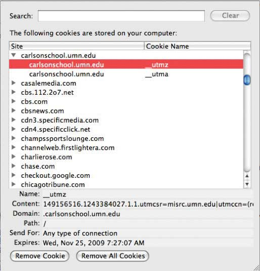The Preferences setting in most Web browsers allows you to see its cookies. This browser has received cookies from several ad networks, media sites, and the University of Minnesota Carlson School of Management.
By serving cookies in ads shown on partner sites, ad networks can build detailed browsing profiles that include sites visited, specific pages viewed, duration of visit, and the types of ads you’ve seen and responded to. And that surfing might give an advertising network a better guess at demographics like gender, age, marital status, and more. Visit a new parent site and expect to see diaper ads in the future, even when you’re surfing for news or sports scores!
If all of this creeps you out, remember that you’re in control. The most popular Web browsers allow you to block all cookies, block just third-party cookies, purge your cookie file, or even ask for your approval before accepting a cookie. Of course, if you block cookies, you block any benefits that come along with them, and some Web site features may require cookies to work properly. Also note that while deleting a cookie breaks a link between your browser and that Web site, if you supply identifying information in the future (say by logging into an old profile), the site might be able to assign your old profile data to the new cookie.
While the Internet offers targeting technologies that go way beyond traditional television, print, and radio offerings, none of these techniques is perfect. Since users are regularly assigned different IP addresses as they connect and disconnect from various physical and wi-fi networks, IP targeting can’t reliably identify individual users. Cookies also have their weaknesses. They’re assigned by browsers, so if several people use the same browser, all of their Web surfing activity may be mixed into the same cookie profile. Some users might also use different browsers on the same machine, or use different computers. Unless a firm has a way to match up these different cookies with user accounts or other user-identifying information, a site may be working with multiple, incomplete profiles.
After studying this section you should be able to do the following:
Until 2009, Google hadn’t used tracking cookies on its AdSense network. While AdSense has been wildly successful, contextual advertising has its limits. For example, what kind of useful targeting can firms really do based on the text of a news item on North Korean nuclear testing?R. Singel, “Online Behavioral Targeting Targeted by Feds, Critics,” Wired News, June 3, 2009. So in March 2009, the firm announced what it calls “interest-based ads.” Google AdSense would now issue a third-party cookie and would track browsing activity across AdSense partner sites, and Google-owned YouTube. AdSense would build a profile, initially identifying users within thirty broad categories and six hundred subcategories. Says one Google project manager, “We’re looking to make ads even more interesting.”R. Hof, “Behavioral Targeting: Google Pulls Out the Stops,” BusinessWeek, March 11, 2009.
Figure 8.16 Categories for Google’s Interest-Based Advertising
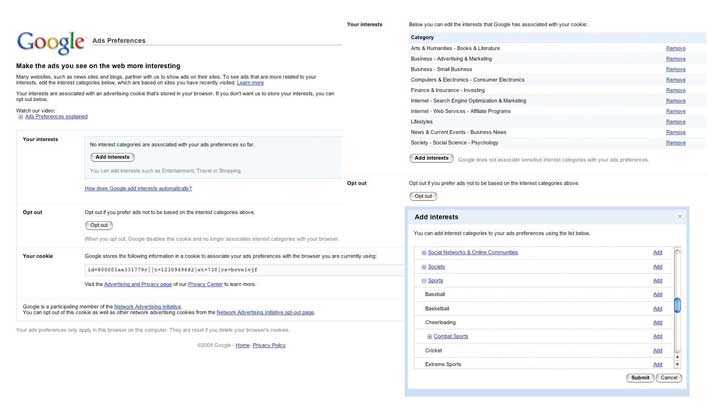Of course, there’s a financial incentive to do this too. Ads deemed more interesting should garner more clicks, meaning more potential customer leads for advertisers, more revenue for Web sites that run AdSense, and more money for Google.
But while targeting can benefit Web surfers, users will resist if they feel that they are being mistreated, exploited, or put at risk. Negative backlash might also result in a change in legislation. The U.S. Federal Trade Commission has already called for more transparency and user control in online advertising and for requesting user consent (opt-inProgram (typically a marketing effort) that requires customer consent. This program is contrasted with opt-out programs, which enroll all customers by default.) when collecting sensitive data.R. Singel, “Online Behavioral Targeting Targeted by Feds, Critics,” Wired News, June 3, 2009. Mishandled user privacy could curtail targeting opportunities, limiting growth across the online advertising field. And with less ad support, many of the Internet’s free services could suffer.
Google’s roll-out of interest-based ads shows the firm’s sensitivity to these issues. First, while major rivals have all linked query history to ad targeting, Google steadfastly refuses to do this. Other sites often link registration data (including user-submitted demographics such as gender and age) with tracking cookies, but Google avoids this practice as well.
Figure 8.17 Here’s an example of one user’s interests, as tracked by Google’s “Interest-based Ads” and displayed in the firm’s “Ad Preferences Manager.”
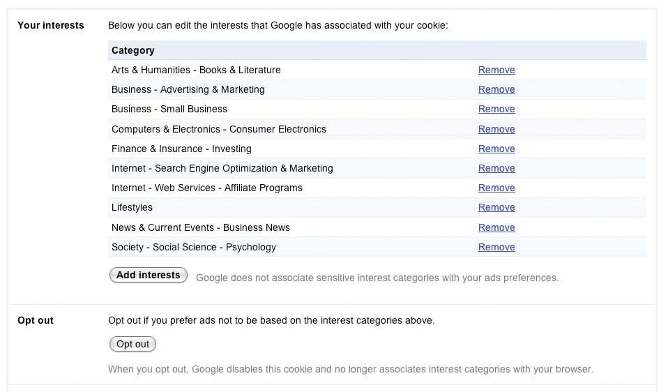Google has also placed significant control in the hands of users, with options at program launch that were notably more robust than those of its competitors.Hansell, 2009. Each interest-based ad is accompanied by an “Ads by Google” link that will bring users to a page describing Google advertising and which provides access to the company’s “Ads Preferences Manager.” This tool allows surfers to see any of the hundreds of potential categorizations that Google has assigned to that browser’s tracking cookie. Users can remove categorizations, and even add interests if they want to improve ad targeting. Some topics are too sensitive to track, and the technology avoids profiling race, religion, sexual orientation, health, political or trade union affiliation, and certain financial categories.R. Mitchell, “What Google Knows about You,” Computerworld, May 11, 2009.
Google also allows users to install a cookie that opts them out of interest-based tracking. And since browser cookies can expire or be deleted, the firm has gone a step further, offering a browser plug-inA small computer program that extends the feature set or capabilities of another application. that will remain permanent, even if a user’s opt-outPrograms that enroll all customer by default, but that allow consumers to discontinue participation if they want to. cookie is purged.
Google’s moves are meant to demonstrate transparency in its ad targeting technology, and the firm’s policies may help raise the collective privacy bar for the industry. While privacy advocates have praised Google’s efforts to put more control in the hands of users, many continue to voice concern over what they see as the increasing amount of information that the firm houses.M. Helft, “BITS; Google Lets Users See a Bit of Selves” New York Times, November 9, 2009. For an avid user, Google could conceivably be holding e-mail (Gmail), photos (Picasa), a Web surfing profile (AdSense and DoubleClick), medical records (Google Health), location (Google Latitude), appointments (Google Calendar), transcripts of phone messages (Google Voice), work files (Google Docs), and more.
Google insists that reports portraying it as a data-hording Big Brother are inaccurate. The firm is adamant that user data exists in silos that aren’t federated in any way, nor are employees permitted access to multiple data archives without extensive clearance and monitoring. Data is not sold to third parties. Activities in Gmail, Docs, or most other services isn’t added to targeting profiles. And any targeting is fully disclosed, with users empowered to opt-out at all levels.R. Mitchell, “What Google Knows about You,” Computerworld, May 11, 2009. But critics counter that corporate intensions and data use policies (articulated in a Web site’s Terms of Service) can change over time, and that a firm’s good behavior today is no guarantee of good behavior in the future.R. Mitchell, “What Google Knows about You,” Computerworld, May 11, 2009.
Google does enjoy a lot of user goodwill, and it is widely recognized for its unofficial motto “Don’t Be Evil.” However, some worry that even though Google might not be evil, it could still make a mistake, and that despite its best intensions, a security breach or employee error could leave data dangerously or embarrassingly exposed.
When AOL released search history on over six hundred and fifty thousand of its Web searchers, these log files included queries such as “How to tell your family you’re a victim of incest,” “Surgical help for depression,” “Can you adopt after a suicide attempt,” “Gynecology oncologists in New York City,” “How long will the swelling last after my tummy tuck,” and perhaps most damning, queries that included specific names, addresses, and phone numbers. While AOL offered the data in a way that disguised individual user accounts, in many cases aggregate query detail contained terms so specific, they provided a strong indication of who conducted the searches.D. Kawamoto and E. Mills, “AOL Apologizes for Release of User Search Data,” CNET, August 7, 2006.
While Google has never experienced a blunder of that magnitude, it has suffered minor incidents, including a March 2009 gaffe in which the firm inadvertently shared some Google Docs with contacts who were never granted access to them.J. Kincaid, “Google Privacy Blunder Shares Your Docs without Permission,” TechCrunch, March 7, 2009.
Privacy advocates also worry that the amount of data stored by Google serves as one-stop shopping for litigators and government investigators. The counter argument points to the fact that Google has continually reflected an aggressive defense of data privacy in court cases. When Viacom sued Google over copyright violations in YouTube, the search giant successfully fought the original subpoena, which had requested user-identifying information.R. Mitchell, “What Google Knows about You,” Computerworld, May 11, 2009. And Google was the only one of the four largest search engines to resist a 2006 Justice Department subpoena for search queries.A. Broache, “Judge: Google Must Give Feds Limited Access to Records,” CNET, March 17, 2006.
Google is increasingly finding itself in precedent-setting cases where the law is vague. Google’s Street View, for example, has been the target of legal action in the United States, Canada, Japan, Greece, and the United Kingdom. Varying legal environments create a challenge to the global rollout of any data-driven initiative.L. Sumagaysay, “Not Everyone Likes the (Google Street) View,” Good Morning Silicon Valley, May 20, 2009.
Ad targeting brings to a head issues of opportunity, privacy, security, risk, and legislation. Google is now taking a more active public relations and lobbying role to prevent misperceptions and to be sure its positions are understood. While the field continues to evolve, Google’s experience will lay the groundwork for the future of personalized technology and provide a case study for other firms that need to strike the right balance between utility and privacy. Despite differences, it seems clear to Google, its advocates, and its detractors that with great power comes great responsibility.
After studying this section you should be able to do the following:
There’s a lot of money to be made online, and this has drawn the attention of criminals and the nefarious. Online fraudsters may attempt to steal from advertisers, harm rivals, or otherwise dishonestly game the system. But bad guys beware—such attempts violate terms-of-service agreements and may lead to prosecution and jail time.
Studying ad-related fraud helps marketers, managers, and technologists understand potential vulnerabilities, as well as the methods used to combat them. This process also builds tech-centric critical thinking, valuation, and risk assessment skills.
Some of the more common types of fraud that are attempted in online advertising include the following:
Disturbing stuff, but firms are after the bad guys and they’ve put their best geeks on the case. Widespread fraud would tank advertiser ROI and crater the online advertising market, so Google and rivals are diligently working to uncover and prosecute the crooks.
On the surface, enriching click fraud seems the easiest to exploit. Just set up a Web site, run PPC ads on the page, and click like crazy. Each click should ring the ad network cash register, and a portion of those funds will be passed on to the perpetrating site owner—ka ching! But remember, each visitor is identified by an IP address, so lots of clicks from a single IP make the bad guys easy to spot.
So organized crime tried to raise the bar, running so-called click farmsRecruiting a network of users to engage in click fraud with the goal of spreading IP addresses across several systems and make a fraud effort more difficult to detect. to spread fraud across dozens of IP addresses. The Times of India uncovered one such effort where Indian housewives were receiving up to twenty-five cents for each ad click made on fraudster-run Web sites.N. Vidyasagar, “India’s Secret Army of Online Ad ‘Clickers,’” Times of India, May 3, 2004. But an unusually large number of clicks from Indian IP addresses foiled these schemes as well.
Fraudsters then moved on to use zombie networksSometimes called “clickbots” or “bot nets,” these are hordes of surreptitiously infiltrated computers, linked and controlled remotely. This technique is used to perpetrate click fraud, as well as a variety of other computer security crimes.—hordes of surreptitiously infiltrated computers, linked and controlled by rogue software.C. Mann, “How Click Fraud Could Swallow the Internet,” Wired, January 2006. To create zombie networks (sometimes called bot nets), hackers exploit security holes, spread viruses, or trick users into installing software that will lie dormant, awaiting commands from a central location. The controlling machine then sends out tasks for each zombie, instructing them to visit Web sites and click on ads in a way that mimics real traffic. Zombie bot nets can be massive. Dutch authorities once took down a gang that controlled some 1.5 million machines.T. Sanders, “Dutch Botnet Gang Facing Jail,” IT News Australia, January 18, 2007; and N. Daswani and M. Stoppleman, “The Anatomy of Clickbot” (paper, Proceedings of the First Conference on First Workshop on Hot Topics in Understanding Botnets, Cambridge, MA, April 11–13, 2007).
Scary, but this is where scale, expertise, and experience come in. The more activity an ad network can monitor, the greater the chance that it can uncover patterns that are anomalous. Higher click-through rates than comparable sites? Caught. Too many visits to a new or obscure site? Caught. Clicks that don’t fit standard surfing patterns for geography, time, and day? Caught.
Sometimes the goal isn’t theft, but sabotage. Google’s Ad Traffic Quality Team backtracked through unusual patterns to uncover a protest effort targeted at Japanese credit card firms. Ad clicks were eventually traced to an incendiary blogger who incited readers to search for the Japanese word kiyashinku (meaning cashing credit, or credit cards), and to click the credit card firm ads that show up, depleting firm search marketing budgets. Sneaky, but uncovered and shut down, without harm to the advertisers.M. Jakobsson and Z. Ramzan, Crimeware: Understanding New Attacks and Defenses (Cupertino, CA: Symantec Press, 2008).
Search firm and ad network software can use data patterns and other signals to ferret out most other types of fraud, too, including rank-based impression fraud, spamdexing, and keyword stuffing. While many have tried to up the stakes with increasingly sophisticated attacks, large ad networks have worked to match them, increasing their anomaly detection capabilities across all types of fraud.M. Jakobsson and Z. Ramzan, Crimeware: Understanding New Attacks and Defenses (Cupertino, CA: Symantec Press, 2008).
Accounts on the actual rate of click fraud vary widely. Some third-party firms contend that nearly one in five clicks is fraudulent.S. Hamner, “Pay-per-Click Advertisers Combat Costly Fraud,” New York Times, May 12, 2009. But Google adamantly disputes these headline-grabbing numbers, claiming that many such reports are based on site logs that reflect false data from conditions that Google doesn’t charge for (e.g., double counting a double click, or adding up repeated use of the browser back button in a way that looks like multiple clicks have occurred). The firm also offers monitoring, analytics, and reporting tools that can uncover this kind of misperceived discrepancy.
Google contends that all invalid clicks (mistakes and fraud) represent less than 10 percent of all clicks, that the vast majority of these clicks are filtered out, and that Google doesn’t charge advertisers for clicks flagged as mistakes or suspicious.M. Lafsky, “Google and Click Fraud: Behind the Numbers,” New York Times, February 27, 2008. In fact, Google says their screening bar is so high and so accurate that less than 0.02 percent of clicks are reactively classified as invalid and credited back to advertisers.M. Jakobsson and Z. Ramzan, Crimeware: Understanding New Attacks and Defenses (Cupertino, CA: Symantec Press, 2008).
So who’s right? While it’s impossible to identify the intention behind every click, the market ultimately pays for performance. And advertisers are continuing to flock to PPC ad networks (and to Google in particular). While that doesn’t mean that firms can stop being vigilant, it does suggest that for most firms, Google seems to have the problem under control.
After studying this section you should be able to do the following:
Google has been growing like gangbusters, but the firm’s twin engines of revenue growth—ads served on search and through its ad networks—will inevitably mature. And it will likely be difficult for Google to find new growth markets that are as lucrative as these. Emerging advertising outlets such as social networks and mobile have lower click-through rates than conventional advertising, suggesting that Google will have to work harder for less money.
For a look at what can happen when maturity hits, check out Microsoft. The House that Gates Built is more profitable than Google, and continues to dominate the incredibly lucrative markets served by Windows and Office. But these markets haven’t grown much for over a decade. In industrialized nations, most Windows and Office purchases come not from growth, but when existing users upgrade or buy new machines. And without substantial year-on-year growth, the stock price doesn’t move.
Figure 8.18 A Comparison of Roughly Five Years of Stock Price Change—Google (GOOG) versus Microsoft (MSFT)

For big firms like Microsoft and Google, pushing stock price north requires not just new markets, but billion-dollar ones. Adding even one hundred million dollars in new revenues doesn’t do much for firms bringing in twenty-one billion dollars and fifty-one billion dollars a year, respectively. That’s why you see Microsoft swinging for the fences, investing in the uncertain, but potentially gargantuan markets of video games, mobile phone software, cloud computing (see Chapter 10 "Software in Flux: Partly Cloudy and Sometimes Free"), music and video, and of course, search and everything else that fuels online ad revenue.
PageRank is by no means the last word in search, and offerings from Google and its rivals continue to evolve. Google supplements PageRank results with news, photos, video, and other categorizations (click the “Show options…” link above your next Google search). Yahoo! is continually refining its search algorithms and presentation (click the little “down” arrow at the top of the firm’s search results for additional categorizations and suggestions). And Microsoft’s third entry into the search market, the “decision engine” Bing, sports nifty tweaks for specific kinds of queries. Restaurant searches in Bing are bundled with ratings stars, product searches show up with reviews and price comparisons, and airline flight searches not only list flight schedules and fares, but also a projection on whether those fares are likely go up or down. Bing also comes with a one-hundred-million-dollar marketing budget, showing that Microsoft is serious about moving its search market share out of the single digits. And in the weeks following Bing’s mid-2009 introduction, the search engine did deliver Microsoft’s first substantive search engine market share gain in years.
New tools like the Wolfram Alpha “knowledge engine” (and to a lesser extent, Google Squared) move beyond Web page rankings and instead aggregate data for comparison, formatting findings in tables and graphs. Web sites are also starting to wrap data in invisible tags that can be recognized by search engines, analysis tools, and other services. If a search engine can tell that a number on a restaurant’s Web site is, for example, either a street address, an average entrée price, or the seating capacity, it will be much easier for computer programs to accurately categorize, compare, and present this information. This is what geeks are talking about when they refer to the semantic WebSites that wrap data in invisible tags that can be recognized by search engines, analysis tools, and other services to make it easier for computer programs to accurately categorize, compare, and present this information.. All signs point to more innovation, more competition, and an increasingly more useful Internet!
Both Google and Microsoft are on a collision course. But there’s also an impressive roster of additional firms circling this space, each with the potential to be competitors, collaborators, merger partners, or all of the above. While wounded and shrinking, Yahoo! is still a powerhouse, ranking ahead of Google in some overall traffic statistics. Add in eBay, Facebook, Twitter, Amazon, SalesForce.com, Apple, Netflix, the video game industry, telecom and mobile carriers, cable firms, and the major media companies, and the next few years have the makings of a big, brutal fight.
Google’s scale advantages in search and its network effects advantages in advertising were outlined earlier. The firm also leads in search/ad experience and expertise and continues to offer a network reach that’s unmatched. But the strength of Google’s other competitive resources is less clear.
Within Google’s ad network, there are switching costs for advertisers and for content providers. Google partners have set up accounts and are familiar with the firm’s tools and analytics. Content providers would also need to modify Web sites to replace AdSense or DoubleClick ads with rivals. But choosing Google doesn’t cut out the competition. Many advertisers and content providers participate in multiple ad networks, making it easier to shift business from one firm to another. That likely means that Google will have to retain its partners by offering superior value.
Another vulnerability may exist with search consumers. While Google’s brand is strong, switching costs for search users are incredibly low. Move from Google.com to Ask.com and you actually save three letters of typing!
Still, there are no signs that Google’s search leadership is in jeopardy. So far users have been creatures of habit, returning to Google despite heavy marketing by rivals. And in Google’s first decade, no rival has offered technology compelling enough to woo away the googling masses—the firm’s share has only increased. Defeating Google with some sort of technical advantage will be difficult, since Web-based innovation can often be quickly imitated.
The Google Toolbar helps reinforce search habits among those who have it installed, and Google pays the Mozilla foundation (the folks behind the Firefox browser) upwards of sixty-six million dollars a year to serve as its default search option for the open source browser.S. Shankland, “Thanks, Google: Mozilla Revenue Hits $75 Million,” CNET, November 19, 2008. But Google’s track record in expanding reach through distribution deals is mixed. The firm spent nearly one billion dollars to have MySpace run AdSense ads, but Google has publicly stated that social network advertising has not been as lucrative as it had hoped (see Chapter 7 "Facebook: Building a Business from the Social Graph"). The firm has also spent nearly one billion dollars to have Dell preinstall its computers with the Google browser toolbar and Google desktop search products. But in 2009, Microsoft inked deals that displaced Google on Dell machines, and it also edged Google out in a five-year search contract with Verizon Wireless.N. Wingfield, “Microsoft Wins Key Search Deals,” Wall Street Journal, January 8, 2009.
Microsoft could benefit from embedding its Bing search engine into its most popular products (imagine putting Bing in the right-mouseclick menu alongside cut, copy, and paste). But with Internet Explorer market share above 65 percent, Office above 80 percent, and Windows at roughly 90 percent,Data source: http://marketshare.hitslink.com; and E. Montalbano, “Forrester: Microsoft Office in No Danger from Competitors,” InfoWorld, June 4, 2009. this seems unlikely.
European antitrust officials have already taken action against Redmond’s bundling Windows Media Player and Internet Explorer with Windows. Add in a less favorable antitrust climate in the United States, and tying any of these products to Bing is almost certainly out of bounds. What’s not clear is whether or not regulators would allow Bing to be bundled with less dominant Microsoft offerings, such as mobile phone software, Xbox, and MSN.
But increasingly, Google is also an antitrust target. Microsoft has itself raised antitrust concerns against Google, unsuccessfully lobbying both U.S. and European authorities to block the firm’s acquisition of DoubleClick.A. Broach, “On Capitol Hill, Google and Microsoft Spar over DoubleClick,” CNET, September 27, 2007; and D. Kawamoto and A. Broach, “EU Extends Review of Google-DoubleClick Merger,” CNET, November 13, 2007. Google was forced to abandoned a fall, 2008, search advertising partnership with Yahoo! after the Justice Department indicated its intention to block the agreement. The Justice Department is also investigating a Google settlement with the Authors’ Guild, a deal in which critics have suggested that Google scored a near monopoly on certain book scanning, searching, and data serving rights.S. Wildstrom, “Google Book Search and the Dog in the Manger,” BusinessWeek, April 18, 2009. And yet another probe is investigating whether Google colluded with Apple, Yahoo! and other firms to limit efforts to hire away top talent.E. Buskirk, “Antitrust Probe to Review Hiring Practices at Apple, Google, Yahoo: Report,” Wired News, June 3, 2009.
Of course, being big isn’t enough to violate U.S. antitrust law. Harvard Law’s Andrew Gavil says, “You’ve got to be big, and you have to be bad. You have to be both.”S. Lohr and M. Helft, “New Mood in Antitrust May Target Google,” New York Times, May 18, 2009. This may be a difficult case to make against a firm that has a history of being a relentless supporter of open computing standards. And as mentioned earlier, there is little forcing users to stick with Google—the firm must continue to win this market on its own merits. While Google may escape all of these investigations, increased antitrust scrutiny is a downside that comes along with the advantages of market-dominating scale.
Google has been a champion of increased Internet access. But altruism aside, more net access also means a greater likelihood of ad revenue.
Google’s effort to catalyze Internet use worldwide comes through on multiple fronts. In the United States, Google has supported (with varying degrees of success) efforts to offer free wi-fi in San Francisco and Mountain View. But most ambitiously, Google is also a major backer (along with Liberty Global and HSBC) of the O3b satellite network. O3b stands for “the other three billion” of the world’s population who currently lack Internet access. O3b hopes to have sixteen satellites circling the globe by late 2010, blanketing underserved regions with low latencyLow delay. (low delay), high-speed Internet access.O. Malik, “Google Invests in Satellite Broadband Startup,” GigaOM, September 9, 2008. With Moore’s Law dropping computing costs as world income levels rise, Google hopes to empower the currently disenfranchised masses to start surfing. Good for global economies, good for living standards, and good for Google.
Another way Google can lower the cost of surfing is by giving mobile phone software away for free. That’s the thinking behind the firm’s Android offering. With Android, Google provides mobile phone vendors with a Linux-based operating system, supporting tools, standards, and an application marketplace akin to Apple’s AppStore. Android itself isn’t ad-supported—there aren’t Google ads embedded in the OS. But the hope is that if handset manufacturers don’t have to write their own software, the cost of wireless mobile devices will go down. And cheaper devices mean that more users will have access to the mobile Internet, adding more ad-serving opportunities for Google and its partner sites.
While Android started as a mobile phone operating system and software stack, its use has been expanded by hardware manufacturers; it is now serving as a Windows alternative on low-cost, Internet-equipped laptops (netbooks) and eBook readers. And in 2009, Google announced a direct strike at the netbook—its Chrome OS. Powered by a combination of open source Linux and Google’s open source Chrome browser, the Chrome OS is specifically designed to provide a lightweight, but consistent user interface for applications that otherwise live “in the clouds,” preferably residing on Google’s server farms (see Chapter 10 "Software in Flux: Partly Cloudy and Sometimes Free"). And a tailored Android or Chrome OS could conceivably power net access in a host of devices, including televisions, set top boxes, and automobiles. Google has dabbled in selling ads for television (as well as radio and print). There may be considerable potential in bringing variants of ad targeting technology, search, and a host of other services across these devices.
Google has also successfully lobbied the U.S. government to force wireless telecom carriers to be more open, dismantling what are known in the industry as walled gardensA closed network or single set of services controlled by one dominant firm.. Before Google’s lobbying efforts, mobile carriers could act as gatekeepers, screening out hardware providers and software services from their networks. Now, paying customers of carriers that operate over the recently allocated U.S. wireless spectrum will have access to a choice of hardware and less restrictive access to Web sites and services. And Google hopes this expands its ability to compete without obstruction.
Then there’s Internet video, with Google in the lead here too. It’s tough to imagine any peer-produced video site displacing YouTube. Users go to YouTube because there’s more content, while amateur content providers go there seeking more users (classic two-sided network effects). This critical advantage was the main reason why, in 2006, Google paid $1.65 billion for what was then just a twenty-month-old startup.
That popularity comes at a price. Even with falling bandwidth and storage costs, at twenty hours of video uploaded to YouTube every minute, the cost to store and serve this content is cripplingly large.E. Nakashima, “YouTube Ordered to Release User Data,” Washington Post, July 4, 2008. Credit Suisse estimates that in 2009, YouTube will bring in roughly $240 million in ad revenue, pitted against $711 million in operating expenses. That’s a shortfall of more than $470 million. Analysts estimate that for YouTube to break even, it would need to achieve an ad CPM of $9.48 on each of the roughly seventy-five billion streams it’ll serve up this year. A tough task. For comparison, Hulu (a site that specializes in offering ad-supported streams of television shows and movies) earns CPM rates of thirty dollars and shares about 70 percent of this with copyright holders. Most user-generated content sports CPM rates south of a buck.B. Wayne, “YouTube Is Doomed,” Silicon Alley Insider, April 9, 2009. Some differ with the Credit Suisse report—RampRate pegs the losses at $174 million. In fact, it may be in Google’s interest to allow others to think of YouTube as more of a money pit than it really is. That perception might keep rivals away longer, allowing the firm to solidify its dominant position while getting the revenue model right. Even as a public company, Google can keep mum about YouTube specifics. Says the firm’s CFO, “We know our cost position, but nobody else does.”“How Can YouTube Survive?” Independent, July 7, 2009.
The explosion of video uploading is also adding to costs as more cell phones become net-equipped video cameras. YouTube’s mobile uploads were up 400 percent in just the first week following the launch of the video-equipped iPhone 3GS.J. Kincaid, “YouTube Mobile Uploads Up 400% Since iPhone 3GS Launch,” TechCrunch, June 25, 2009. Viewing will also skyrocket as mobile devices and television sets ship with YouTube access, adding to revenue potential. The firm is still experimenting with ad models—these include traditional banner and text ads, plus ads transparently layered across the bottom 20 percent of the screen, preroll commercials that appear before the selected video, and more. Google has both the money and time to invest in nurturing this market, and it continues to be hesitant in saturating the media with ads that may annoy users and constrain adoption.
In 2007 the firm announced a tagline to sum up its intensions: “search, ads, and apps.” Google is king of the first two, but this last item hasn’t matured to the point where it impacts the firm’s financials.
Experimentation and innovation are deeply ingrained in Google’s tech-centric culture, and this has led to a flood of product offerings. Google released more than 360 products in 2008, and another 120 in Q1 2009.M. Shiels, “Google Unveils ‘Smarter Search,’” BBC News, May 13, 2009. It’s also cancelled several along the way, including Jaiku (which couldn’t beat Twitter), Google Video (which was superseded by the YouTube acquisition), and a bunch more you’ve likely not heard of, like Dodgeball, Notebook, Catalog Search, and Mashup Editor.R. Needleman, “Google Killing Jaiku, Dodgeball, Notebook, Other Projects,” CNET, January 14, 2009.
With all this innovation, it’s tough to stay current with Google’s cutting edge product portfolio. But the company does offer “beta” releases of some projects, and invites the public to try out and comment on its many experiments. To see some of these efforts in action, visit Google Labs at http://googlelabs.com. And to see a current list of more mature offerings, check out http://www.google.com/options.
Google’s “Apps” are mostly Web-based software-as-a-service offerings. Apps include an Office-style suite that sports a word processor, presentation tool, and spreadsheet, all served through a browser. While initially clunky, the products are constantly being refined. The spreadsheet product, for example, has been seeing new releases every two weeks, with features such as graphing and pivot tables inching it closer in capabilities to desktop alternatives.D. Girouard, “Google Inc. Presentation” (Bank of America and Merrill Lynch 2009 Technology Conference, New York, June 4, 2009). And new browser standards, such as HTML 5, will make it even easier for what lives in the browser to mimic what you’re currently using on your desktop.
Google also offers Gears, a product that allows compatible apps to be used offline when net access isn’t available. That’ll be critical as long as Internet access is less reliable than your hard drive, but online collaboration is where these products can really excel (no pun intended). Most Google apps allow not only group viewing, but also collaborative editing, common storage, and version control. Google’s collaboration push also includes its wiki-like Google Sites tool, and a new platform called Wave, billed as a sort of next-step evolving beyond e-mail and instant messaging.
Unknown is how much money Google will make off all of this. Consumers and small businesses have free access to these products, with usage for up to fifty users funded by in-app ads. But is there much of a market serving ads to people working on spreadsheets? Enterprises can gain additional, ad-free licenses for a fee. While users have been reluctant to give up Microsoft Office, many have individually migrated to Google’s Web-based e-mail and calendar tools. Google’s enterprise apps group will now do the same thing for organizations, acting as a sort of outsourcer by running e-mail, calendar, and other services for a firm; all while handling upgrades, spam screening, virus protection, backup, and other administrative burdens. Arizona State University, biotech giant Genentech, and auto parts firm Valeo are among the Google partners that have signed on to make the firm’s app offerings available to thousands.S. Coughlin, “Google’s E-mail for Universities,” BBC News, June 11, 2007; Q. Hardy, “Google Muscles Further into Business Software,” Forbes, February 28, 2008; and T. Claburn, “Google’s Cloud Evangelism Converts Enterprise Customers,” InformationWeek, May 13, 2009.
And of course, Microsoft won’t let Google take this market without a fight. Office 10 was announced along with a simplified, free, ad-supported, Web-based, online options for Word, Excel, PowerPoint, and OneNote; and Microsoft can also migrate applications like e-mail and calendaring off corporate computers and onto Microsoft’s server farms.
It’s not until considered in its entirety that one gets a sense for what Google has the potential to achieve. It’s possible that increasing numbers of users worldwide will adopt light, cheap netbooks and other devices powered by free Google software (Android, Google’s Chrome browser and Chrome OS). Productivity apps, e-mail, calendaring, and collaboration tools will all exist “in the cloud,” accessible through any browser, with files stored on Google’s servers in a way that minimizes hard drive needs. Google will entertain you, help you find the information you need, help you shop, handle payment (Google Checkout), and more. And the firms you engage online may increasingly turn to Google to replace their existing hardware and software infrastructure with corporate computing platforms like Google Apps Engine (see Chapter 10 "Software in Flux: Partly Cloudy and Sometimes Free"). All of this would be based on open standards, but switching costs, scale, and increasing returns from expertise across these efforts could yield enormous advantages.
Studying Google allowed us to learn about search and the infrastructure that powers this critical technology. We’ve studied the business of ads, covering search advertising, ad networks, and ad targeting in a way that blends strategic and technology issues. And we’ve covered the ethical, legal, growth, and competitive challenges that Google and its rivals face. Studying Google in this context should not only help you understand what’s happening today, it should also help you develop critical thinking skills for assessing the opportunities and threats that will emerge across industries as technologies continue to evolve.